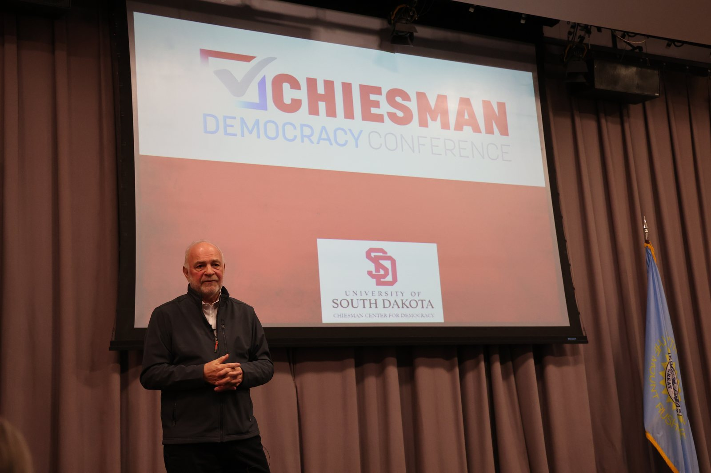

From the plains of South Dakota to the world's largest government summit — four decades of teaching leaders to be understood.
Steve Jarding grew up in a small town in South Dakota, one of a large family — roots that stayed with him and shaped a lifelong feel for the concerns of working people and the rural voters national politics so often overlooks. That instinct would become the throughline of his career.
He entered politics as an organizer and strategist, rising quickly through the ranks of American campaign politics. Over the following decades he managed and advised US Senate and gubernatorial races across the country, developing a reputation for winning in difficult terrain. In 1996, Roll Call named him one of the fifty most influential political people in Washington.

Jarding served as campaign manager for Governor Mark Warner of Virginia — a race the analyst Charlie Cook called the best-run campaign in America — and as the original strategist for Senator Jim Webb, who improbably unseated an incumbent in 2006. He was communications director and senior strategist for Senator Bob Kerrey, managed Senator Tim Johnson's re-election, and ran the coordinated campaign for Senator Tom Daschle's first Senate race.
His influence reached well beyond individual races. In the mid-1990s he spent four years as communications director and then senior advisor to the Democratic Senatorial Campaign Committee in Washington, shaping national message and strategy across the country. He directed national leadership PACs for senators Bob Kerrey and John Edwards, and in 2019 returned to the field as senior advisor and debate-prep trainer to New York City Mayor Bill de Blasio's presidential campaign. Time and again his particular gift was the same — connecting candidates to the working and rural voters other strategists had written off, the skill that would later become the subject of his book.
In 2004, that practitioner's knowledge carried him to Harvard. He joined the faculty of the John F. Kennedy School of Government, where he would teach political communication, campaign management, and lobbying for sixteen years. His course on campaign management became one of the most sought-after classes at the school, twice nominated for the Most Influential Course Award, and in 2016 the student body voted him Teacher of the Year.
What set Jarding apart was never theory alone. Students describe a teacher who made them believe they could do the work themselves — who taught not just how campaigns are won, but how a person finds their own voice and the confidence to use it. Over the years he refined this into a new paradigm of professional communication, one he would go on to teach in more than fifty countries.
His reach became global. He advised eleven presidents and prime ministers, a Nobel Peace Prize laureate, members of parliament and congress, mayors and first-time candidates alike. He taught at IESE Business School in Spain and on the faculty of public-policy and leadership programs from Romania to India. In 2022, his new paradigm of professional communication was recognized at the World Government Summit in Dubai, where he led a workshop for nineteen thousand delegates, and he was later engaged to train the entire body of UAE government employees and ministers.
He is the co-author of Foxes in the Henhouse (Simon & Schuster, 2006), which rose to become the 42nd best-selling book in America — a study of how progressives can win back the American heartland, and the distillation of everything he had learned reaching voters others ignored. He is also lead author of the “American” chapter on political advertising in the international Handbook on Political Advertising.
Some of his work has reached beyond politics and the classroom entirely. In 2013, at the request of representatives of the Catholic Church, Jarding organized a Peace and Reconciliation Summit in Bosnia — raising the funds, building the program, and bringing together presidents from seven Balkan countries who had not sat in the same room since the end of the Bosnian War eighteen years earlier. He moderated the three-day summit, and the United Nations recognized it for its success.
In 2025, a documentary — Creating Giants — chronicled his teaching career and the mark he left on his students. Every year since leaving Harvard, he has returned to teach students from the Kennedy School, the Business School, and MIT.
Consulting, communication training, and speaking — worldwide.
Get in touch